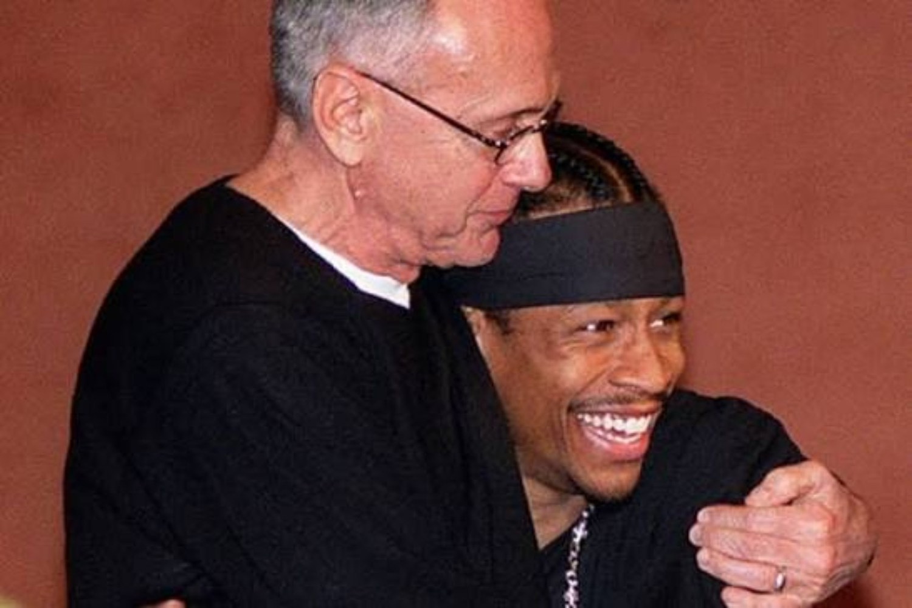
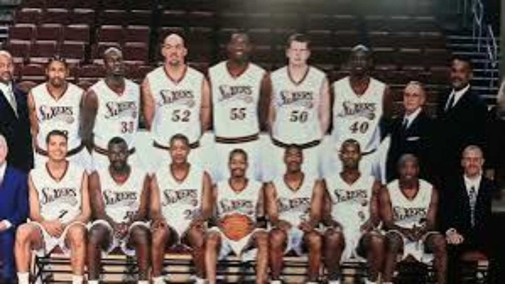
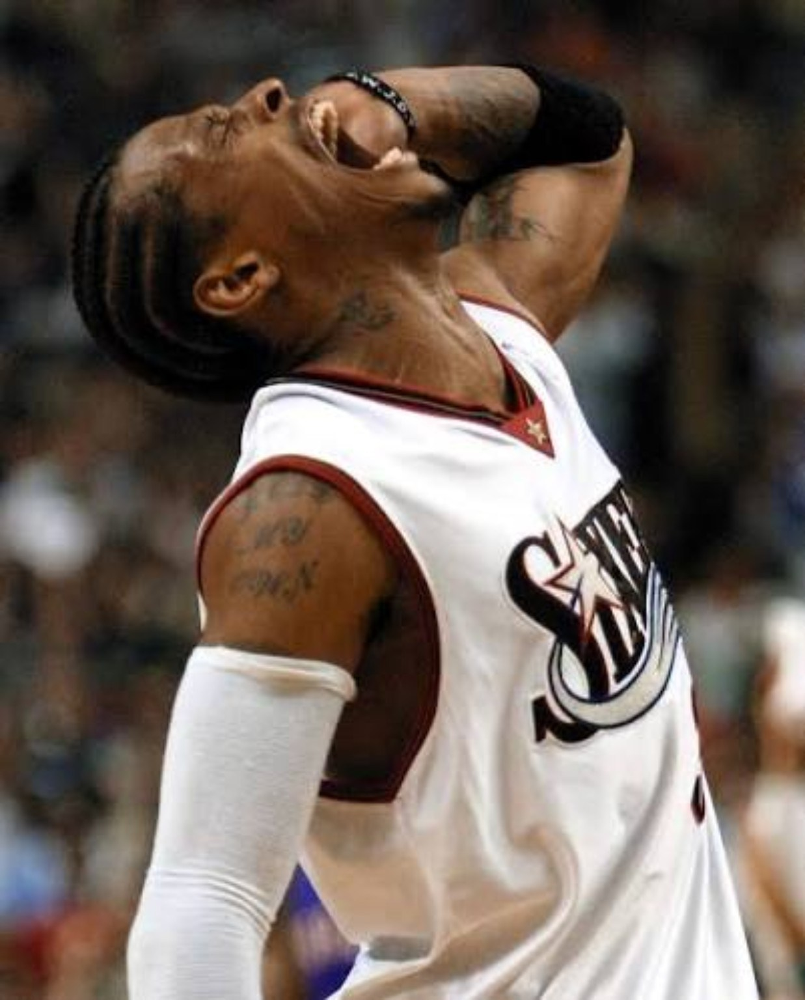
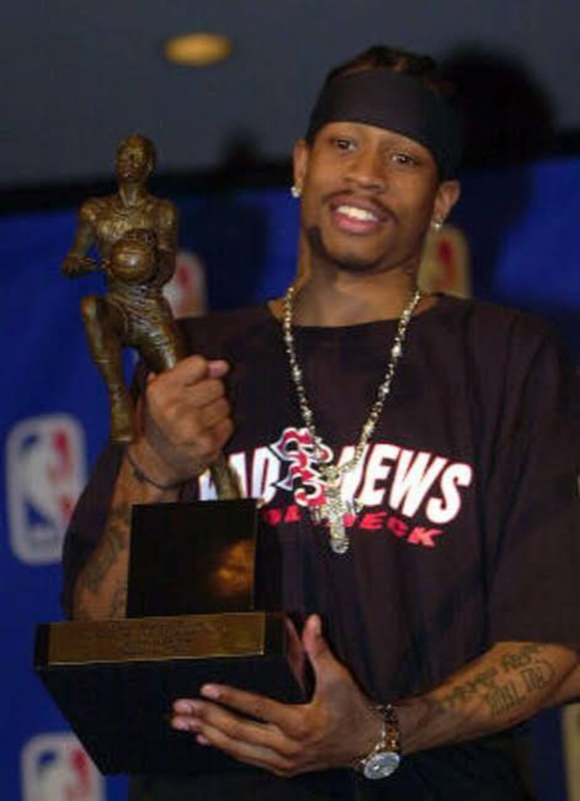
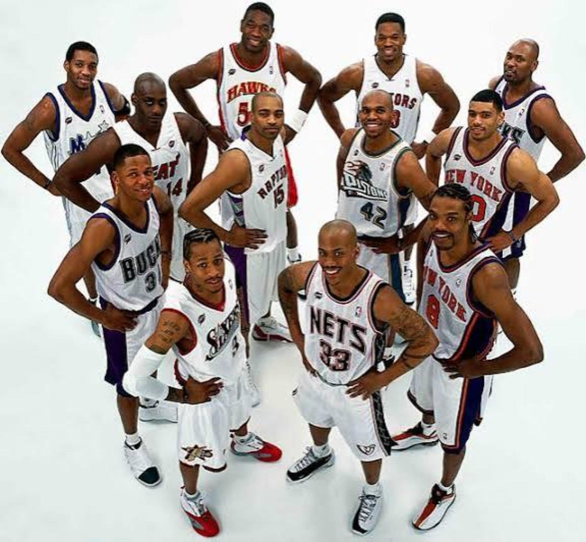
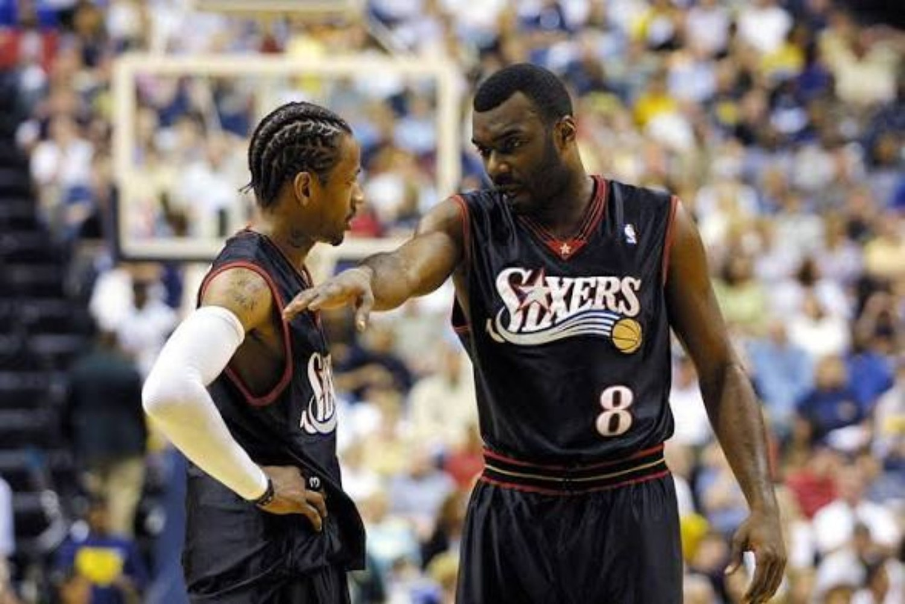
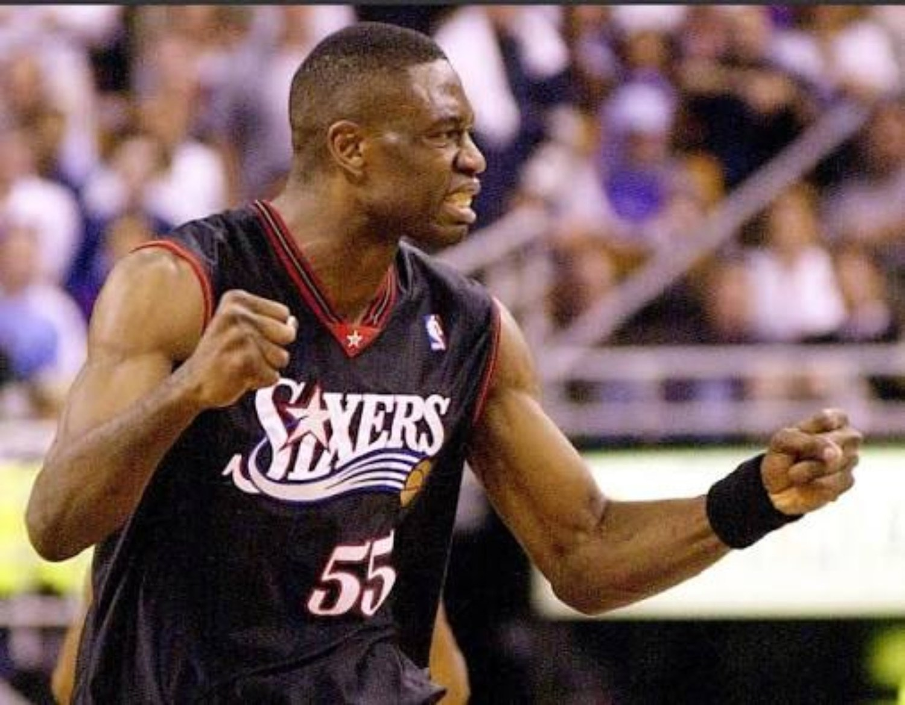
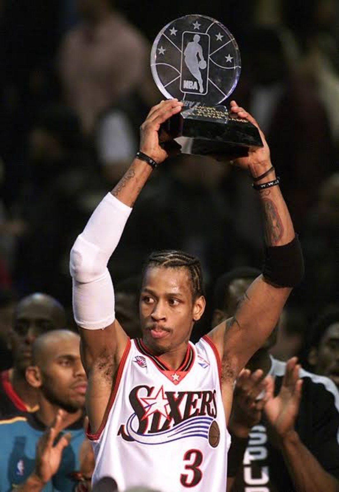

File 003 ended with Allen Iverson moving from flashy young star toward elite. File 004 starts with something even bigger: a season where the player, the team, the image and the moment all lined up at once. This was not just the best outcome of his career. This was the season that made the whole Allen Iverson argument permanent.
01. THE SEASON ALMOST NEVER HAPPENED IN PHILLY.
The summer of 2000 nearly ended the Iverson era before its signature season began. Philadelphia came close to moving him to Detroit after years of friction between the franchise star and Larry Brown. The deal fell apart, and the timing became impossible to ignore.
Whether the failed trade alone changed Iverson's approach can never be proven. What came next looked like a response anyway. He was still himself. Still emotional. Still stubborn. Still culturally different from the NBA superstar template. But there was more maturity in the way he approached winning.

Brown had to accept that Iverson was going to do things his way and still show up ready to play his ass off. Iverson had to understand that buying into structure did not mean giving up his identity. Winning has a way of changing arguments that once felt impossible to solve.
02. TEN STRAIGHT WINS CHANGED THE TEMPERATURE IMMEDIATELY.
Philadelphia opened the season 10–0. There was no slow buildup. The same team that had spent the previous three seasons learning how to win suddenly looked like it already knew.
Iverson was scoring in waves. Aaron McKie was giving the second unit real life. Theo Ratliff was protecting the rim at an All-Star level. Eric Snow kept the offense organized even while battling injuries. George Lynch defended. Tyrone Hill hit the mid-range jumper, rebounded and gave the front line toughness. Matt Geiger gave them a backup center who could actually score.

This was not a roster full of stars. It was a roster full of jobs.
03. IVERSON WAS THE OFFENSE.
Aaron McKie finished as Philadelphia's second-leading scorer at only 11.6 points per game. That number tells the story better than calling the supporting cast bad ever could.
The Sixers were a good basketball team. They defended. They rebounded. They were well coached. They had veteran toughness. But there was no second scorer carrying 20 a night, no co-star taking over every third game and no second offensive engine sharing the burden.
Iverson averaged 31.1 points. Everybody else made the structure work around that reality.
The supporting cast made the system work. Iverson made the scoreboard move.
That is the cleanest MVP argument for this team. Take Iverson away and the defense still has pieces. The rebounding still has pieces. The coaching still exists. The offense loses the one thing it cannot replace.
04. IT WAS JUST HIS TIME.
The raw scoring was ridiculous even before the playoffs entered the conversation. Iverson produced 17 regular-season games with at least 40 points, the most of any player that season. He had two 50-point games. He led the league in scoring and steals. He played 71 games while constantly taking punishment and playing through injuries.

The sleeve might be the perfect symbol for the whole season. It was not created as a fashion statement. It was there because his elbow needed protection. Then Iverson wore it, kept hooping, and the rest of basketball turned it into part of the uniform. Decades later, sleeves are everywhere.
That is what made the season different. The basketball and the culture kept colliding without Iverson having to manufacture either one. The things he did because they were natural to him kept becoming trends after everybody else saw them.
05. THE ALL-STAR GAME MADE THE WHOLE LEAGUE WATCH.
The 2001 All-Star Game was more than a fun exhibition in the middle of the season. It became a national snapshot of everything happening around Iverson.
The West was loaded. The East fell behind by 21 in the fourth quarter. Iverson scored 15 of his 25 points in the fourth and took home All-Star Game MVP as the East came all the way back to win 111–110.


The image was finally coming full circle too. Five years earlier, Iverson had entered the league with people questioning whether the game, the personality and the presentation could coexist with winning. Now he was the center of one of the league's biggest stages, holding another trophy while his team sat near the top of the conference.
Thirty-one a night made the case. The No. 1 seed legitimized it. The All-Star Game made everybody watch it happen.
06. THE ALL-STAR GAME ALSO LOOKED LIKE A TRADE PREVIEW.
There is a piece of the 2001 All-Star story that looks almost too perfect in hindsight. Larry Brown coached the East. Iverson drove the comeback with his scoring. A veteran center controlled the glass with 22 rebounds and protected the paint.
Eleven days later, Philadelphia traded for Dikembe Mutombo.

Theo Ratliff had been excellent. He was an All-Star that season, led the league in blocks and had played his way into real trade value. But the wrist injury threatened to wipe out a huge stretch of the season. Philadelphia took the younger version of its defensive-center archetype and turned that value into the established version.

Mutombo was 34, experienced, physical enough to guard the league's best big men, elite on the glass and capable of giving enough offense around the rim. Just as important, his veteran discipline gave Philadelphia a defensive anchor Brown could trust to stay on the floor.
07. McKIE'S VALUE WAS BIGGER THAN 11.6 AND 5.0.
Aaron McKie's numbers were never going to explain why he mattered. 11.6 points and 5.0 assists looks ordinary until the game asks for somebody who can handle the ball, set up the offense, defend, score without hijacking possessions and keep everything connected when Iverson is being trapped.
That was McKie. He was not a secret second superstar. He was a really good role player whose value increased when the game became harder.
08. THE MVP FIELD WAS LOADED.
The 2000–01 MVP did not happen because the league lacked competition. Shaquille O'Neal was putting up 28.7 and 12.7 for a 56-win Lakers team. Tim Duncan averaged 22.2 and 12.2 for a 58-win San Antonio team. Chris Webber was at 27.1 and 11.1. Kobe Bryant averaged 28.5. Kevin Garnett, Tracy McGrady and Vince Carter were all operating at star level.
Duncan and Shaq had the clearest combination of individual production and elite team records to challenge him. But Iverson's case had its own separation point: 31.1 a night, 56 wins, the East's No. 1 seed and no traditional second offensive star.
When the voting came in, Iverson received 93 of 124 first-place votes. Duncan was second. Shaq was third. This was not an award handed over because nobody else had a case. Iverson had the case that defined the season.

09. THE IMAGE DIDN'T CHANGE. THE PERCEPTION DID.
The MVP meant more because Iverson did not have to turn into a sanitized version of himself to get there. The braids were still there. The tattoos were still there. The connection to hip-hop was still there. The sleeve was becoming part of basketball's visual language. What changed was the level of maturity attached to all of it.
At 25, he was still growing up. He still had rough edges. Brown still had his way of seeing basketball and Iverson still had his. But the success changed the relationship. The league finally had to separate being different from being unable to lead.
The league finally accepted Allen Iverson without Allen Iverson having to become somebody else.
10. EVERYBODY PLAYED THEIR ROLE.
The individual awards almost read like a diagram of the whole Sixers system.
Philadelphia became the first team to capture those four major awards in the same season. That did not mean four Sixers were stars. It meant the roles fit well enough for every major part of the system to be recognized.
Everybody played their role. That is why the team won 56 games. That is why the MVP season was bigger than one man's scoring average even though one man's scoring was still the engine.
11. HIS BEST SEASON. HIS MOST IMPORTANT SEASON.
There are later versions of Iverson that may have been more polished individually. There are seasons where the assists were higher. Seasons where the scoring was even slightly higher. But none of them combined production, winning, health, image, influence and consequence the way 2000–01 did.
This was the season that set trends, made an icon, validated the entire basketball formula and realistically turned a future Hall of Fame argument into a matter of time.
The postseason would validate all of it even further. That story belongs to File 005.
THE MVP TROPHY VALIDATED THE PLAYER.
THE SEASON TURNED THE PLAYER INTO AN ICON.
It was his time.
SOURCES / RECORD
NBA — Iverson wins 2001 MVP • NBA — 2000–01 season review • Basketball-Reference — 2000–01 Sixers • Basketball-Reference — 2001 All-Star Game • Basketball-Reference — Aaron McKie • Sports Illustrated — Iverson, Brown and the sleeve era
005 • THE 2001 PLAYOFF RUN.
Indiana. Toronto. Vince. Milwaukee. Ray Allen. Seven-game wars. Then Los Angeles, 48 points and the stepover. The MVP season gets tested in the postseason.
BACK TO THE ANSWER FILES →